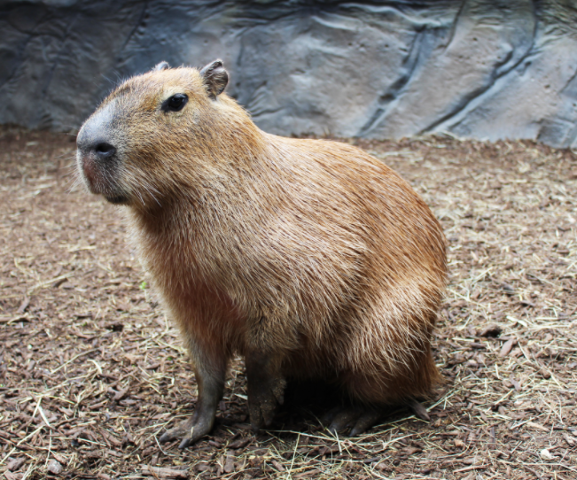

Learn to Love Capybaras!
Why? Well...
They are peaceful herbivores
They are very social
And... they taste very good They love humans!

Capybaras live all over the Western World! It's no wonder you'd want to learn the specifics!
If you want to keep a capybara as a pet, you must adhere to their strict habitat.
You also have to consider their habits and what they like to do.
The Habitats and Lifestyles of Capybaras
Capybaras are very sociable to all creatures as well!
The only time capybaras show aggression is when they are provoked, and they always bite back.
Other than that, they are basically always peaceable!
Click here to learn about their peacefulness!
Lastly, Capybaras have very strict diets!
Even as herbivores who don't have to compete for prey, they still need an optimal diet.
One of these things is access to fresh water and grass to train their sharp teeth 24/7.